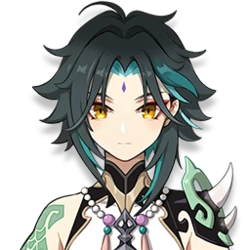
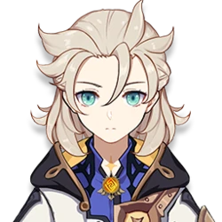

𝕲𝖊𝖓𝖘𝖍𝖎𝖓 𝕴𝖒𝖕𝖆𝖈𝖙
Сяо
Сяо — играбельный Анемо персонаж в Genshin Impact. Он адепт и единственный из пяти сильнейших защитников якса, оставшийся в живых. В настоящее время он проживает на постоялом дворе «Ваншу», продолжая исполнять контракт и изолируя себя от общения со смертными.Один из Адептов, защищающих Ли Юэ. Его также называют Защитником Якса. Хотя Сяо молодо выглядит, он упоминается в легендах, которым уже больше тысячи лет! Его любимое лакомство – миндальный тофу с постоялого двора «Ван Шу». Дело в том, что вкус миндального тофу напоминает Сяо о снах, которые он когда-то поглощал.
Сяо — играбельный Анемо персонаж в Genshin Impact. Он адепт и единственный из пяти сильнейших защитников якса, оставшийся в живых. В настоящее время он проживает на постоялом дворе «Ваншу», продолжая исполнять контракт и изолируя себя от общения со смертными.Один из Адептов, защищающих Ли Юэ. Его также называют Защитником Якса. Хотя Сяо молодо выглядит, он упоминается в легендах, которым уже больше тысячи лет! Его любимое лакомство – миндальный тофу с постоялого двора «Ван Шу». Дело в том, что вкус миндального тофу напоминает Сяо о снах, которые он когда-то поглощал.
Венти
Венти — играбельный Анемо персонаж в Genshin Impact.Неведомые ветра привели барда в наши земли. Порой его песни стары как свет, а иной раз он играет современные произведения. Любит яблоки и живую атмосферу, не любит сыры и всё липкое. Когда он управляет ветрами, его Анемо сила проявляется в виде перьев. Венти привлекает их лёгкость и беспечность.
Венти — играбельный Анемо персонаж в Genshin Impact.Неведомые ветра привели барда в наши земли. Порой его песни стары как свет, а иной раз он играет современные произведения. Любит яблоки и живую атмосферу, не любит сыры и всё липкое. Когда он управляет ветрами, его Анемо сила проявляется в виде перьев. Венти привлекает их лёгкость и беспечность.
Ху тао
Ху Тао — хозяйка ритуального бюро «Ваншэн» в семьдесят седьмом поколении. Важная фигура в похоронном деле Ли Юэ. Изо всех сил она устраивает лучшие похороны для людей и оберегает границу между жизнью и смертью. А ещё она чудесный стихоплёт, чьи «шедевры» из уст в уста бродят по Ли Юэ.
Ху Тао — хозяйка ритуального бюро «Ваншэн» в семьдесят седьмом поколении. Важная фигура в похоронном деле Ли Юэ. Изо всех сил она устраивает лучшие похороны для людей и оберегает границу между жизнью и смертью. А ещё она чудесный стихоплёт, чьи «шедевры» из уст в уста бродят по Ли Юэ.
 Ембер
ЕмберЭмбер — играбельный Пиро персонаж в Genshin Impact. Впервые Эмбер можно встретить во время задания Архонтов Пролог. Глава I: Скаут, принесённый ветром.Наивная и задорная девушка, скаут Ордо Фавониус. Благодаря отличному владению планером она стала трехкратным чемпионом Мондштадта по полётам. Будучи восходящей звездой Ордо Фавониус, Эмбер всегда готова к задачам любой сложности.
Лиза
Лиза — играбельный Электро персонаж в Genshin Impact.Она - интеллектуальная ведьма, которая никогда не может достаточно вздремнуть. Будучи библиотекарем Ордо Фавониус, Лиза всегда знает, что нужно делать, чтобы тебя перестали беспокоить. Как бы она ни любила спать, Лиза всегда находит время, чтобы содержать всё в спокойном духовном порядке.
Лиза — играбельный Электро персонаж в Genshin Impact.Она - интеллектуальная ведьма, которая никогда не может достаточно вздремнуть. Будучи библиотекарем Ордо Фавониус, Лиза всегда знает, что нужно делать, чтобы тебя перестали беспокоить. Как бы она ни любила спать, Лиза всегда находит время, чтобы содержать всё в спокойном духовном порядке.
Ноель
Ноэлль — играбельный Гео персонаж в Genshin Impact.Как и многие молодые люди в Мондштадте, Ноэлль мечтает однажды облачиться в доспехи рыцарей Ордо Фавониус. Она не обескуражена отсутствием опыта и, как горничная Ордо Фавониус, она не упускает возвожности изучить все аспекты рыцарства.
Ноэлль — играбельный Гео персонаж в Genshin Impact.Как и многие молодые люди в Мондштадте, Ноэлль мечтает однажды облачиться в доспехи рыцарей Ордо Фавониус. Она не обескуражена отсутствием опыта и, как горничная Ордо Фавониус, она не упускает возвожности изучить все аспекты рыцарства.
Барбара
Барбара — играбельный Гидро персонаж в Genshin Impact.Пастор Ордо Фавониус, а также сияющая звёздочка, любимая всеми в Мондштадте. Жители Мондштадта больше привыкли к бардам, нежели к звёздочкам, но они всё равно без ума от Барбары. «Я в долгу перед духом свободы этого города». — Барбара, о своей популярности.
Барбара — играбельный Гидро персонаж в Genshin Impact.Пастор Ордо Фавониус, а также сияющая звёздочка, любимая всеми в Мондштадте. Жители Мондштадта больше привыкли к бардам, нежели к звёздочкам, но они всё равно без ума от Барбары. «Я в долгу перед духом свободы этого города». — Барбара, о своей популярности.
Сахароза
Сахароза — играбельный Анемо персонаж в Genshin Impact.Алхимик с ненасытным любопытством к миру и всему, что в нём находится. Сахароза занимает должность помощника Альбедо в Ордо Фавониус. Её область исследования - биоалхимия. Она стремится обогатить мир, трансформируя живые существа силой алхимии. Конечно, результаты её исследований зачастую оказываются скорее странными, чем удивительными, но тем не менее она внесла огромный вклад в исследование биоалхимии.
Сахароза — играбельный Анемо персонаж в Genshin Impact.Алхимик с ненасытным любопытством к миру и всему, что в нём находится. Сахароза занимает должность помощника Альбедо в Ордо Фавониус. Её область исследования - биоалхимия. Она стремится обогатить мир, трансформируя живые существа силой алхимии. Конечно, результаты её исследований зачастую оказываются скорее странными, чем удивительными, но тем не менее она внесла огромный вклад в исследование биоалхимии.
Альбедо
Альбедо — алхимик в Мондштадте на службе у Ордо Фавониус. «Гений», «Принц мела», «Старший исследователь»... Титулы и слава не значат для него ничего, когда кругом столько объектов для исследований. Ему не нужны ни богатства, ни связи. Его стремления подчинены одной цели - заполучить сокровенные знания всех поколений учёных.
Альбедо — алхимик в Мондштадте на службе у Ордо Фавониус. «Гений», «Принц мела», «Старший исследователь»... Титулы и слава не значат для него ничего, когда кругом столько объектов для исследований. Ему не нужны ни богатства, ни связи. Его стремления подчинены одной цели - заполучить сокровенные знания всех поколений учёных.
Итер
Путешественник/Путешественница — играбельный персонаж и протагонист Genshin Impact. В начале игры близнецы, брат и сестра, путешествующие по разным мирам, попадают в ловушку Неизвестного Бога, которая захватывает одного из близнецов и запечатывает силы другого, оставляя их выброшенными в Тейвате. На протяжении всей истории Путешественника(цу) сопровождает Паймон.
Путешественник/Путешественница — играбельный персонаж и протагонист Genshin Impact. В начале игры близнецы, брат и сестра, путешествующие по разным мирам, попадают в ловушку Неизвестного Бога, которая захватывает одного из близнецов и запечатывает силы другого, оставляя их выброшенными в Тейвате. На протяжении всей истории Путешественника(цу) сопровождает Паймон.